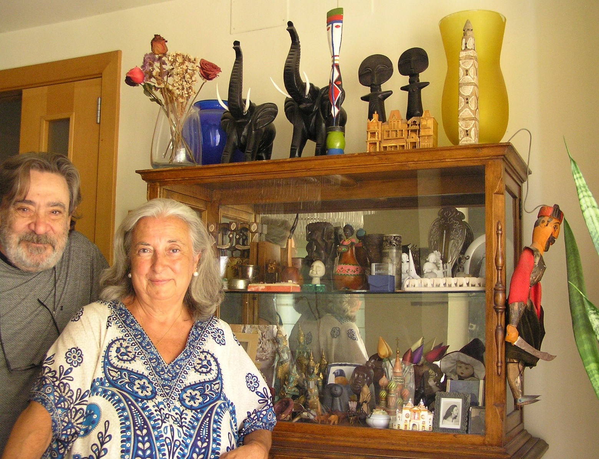
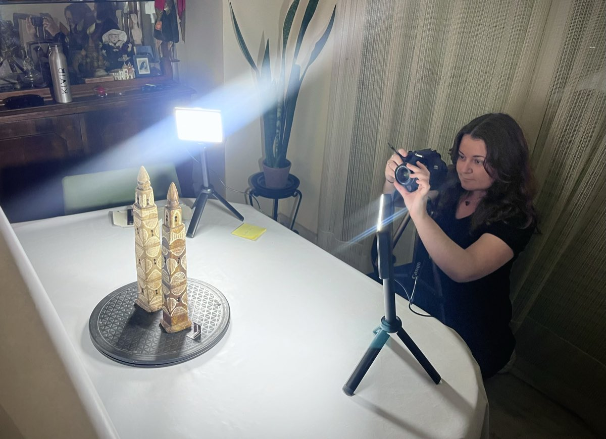
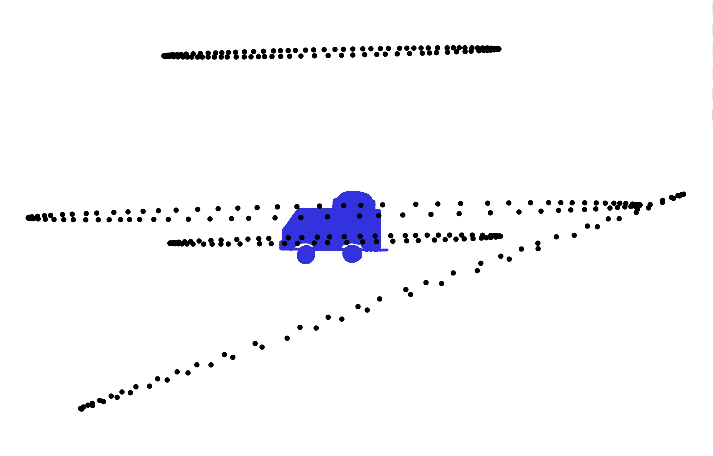
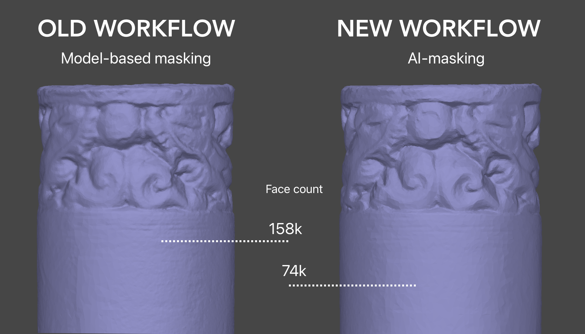
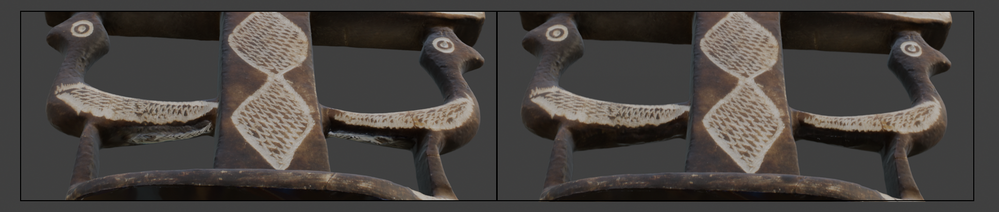

What is Chiriandreses Museum?
"An object in a museum is a condensed story,
a silent witness waiting for a listener."
Sandra Dudley
Museum Materialities: Objects, Sense and Feeling (2009)
Chiriandreses Museum is the culmination of a personal, end-to-end 3D digitisation project of my family's heirlooms and travel mementos — it is a portal where you can see and interact with their 3D models, explore their digitisation notes, and learn about my family's stories encapsulated in them.
Using photogrammetry techniques, every object was digitised as if they were a museum object — aiming for high-quality models, best model-object fidelity given the available hardware and my current skills, and achieve a high-end degree of traceability.
To achieve these targets, I have:
- Followed the guidance offered by the 3D4CH centre on how to produce high-quality 3D digitisation models for Cultural Heritage, along with some tips from photogrammetry professionals in the field from different community forums.
- Implemented the European Commission's VIGIE 2020/654 framework to learn-while-doing the current best practices on paradata and metadata for the Cultural sector.
The result is a 7-month, 6-stages thoroughly documented digitisation project spanning from photography, to metadata gathering, processing of 3D models and, finally, sharing them into a curated digital platform.
It's an honest, personal record of what was truly measured and estimated, some playful experiments, and what models didn't survive the process, and why.
A technical and a personal journey
You can learn about the project from two angles — the pure technical record, and my personal learning journey behind it:
THE PROJECT section you will find a friendlier, stage-by-stage walkthrough of the digitisation pipeline, what happened in each step of the way. Within this section, the Project archive gathers all the detailed, outputted technical records.
MY JOURNEY section contains the more personal side of the project. Lab journal is a day-by-day journal of the challenges I faced, my honest dead ends, and what I learned from these along the way. I captured my biggest takeaways and questions in Lessons learned — hopefully, it can help other peers avoid my same mistakes!

About me
Long story short: I’m an archaeologist in love with all things digital - diving into how 3D interactive data can offer new ways of experiencing, studying and preserving cultural heritage in the digital space.
During my BA in Archaeology and Anthropology at UCL, I found myself very early on gravitating towards Digital Humanities. My very first true hands-on experience with 3D and digitisation techniques was during this time, when I was a post-ex supervisor overseeing the finds processing pipeline of a student-led excavation.
While I was structuring the excavation’s database, I realised that I didn’t want all these great pieces of information to just stay as rows in a database. So I decided to implement a new photographic workflow using artefact photography, photogrammetry and RTI for the 2D and 3D visual documentation of our most relevant artefacts and trenches.
This way I could enable them to be interacted with outside of the dig, facilitating possible further specialist analysis or display in classrooms and local exhibitions. This experience sparked in me a deep intrigue for the potential of advanced imagery to enhance accessibility, dissemination and research in Cultural Heritage.
Some of the excavation’s artefact photographs being displayed in a temporary exhibition in Weald & Downland Living Museum (2023)
Managing media and data across this excavation and other Digital Archaeology projects *2 | *3 taught me how to successfully navigate the real-world struggles of generating digital media within tight budgets, timelines, and not the most “cushy” environments.
I experienced the importance of traceability in Heritage (but how easy it is to lose sight of it too) and equally so, to pay attention to the labelling and organisation of that generated media so that its reuse does not become a derived struggle afterwards. That’s when software, documentation and digital asset management became just as much of a passion for me as Cultural Heritage itself.
I decided to stop being just a ‘user’ of software and really get to understand how it gets built. After a deep dive in software programming and Cloud architecture *1 *6 I spent the last couple of years working in SaaS software technical support, learning first-hand how web apps get deployed and iterated on in the real world, and how digital experiences get curated. I got pretty good at helping both internal and client teams do their best work when problems arose *5 , eventually supporting the documentation and development of a Digital Asset Management cloud platform.
Ultimately, Chiriandreses Museum is where all of that technical and archaeological knowledge merges. An end-to-end digitisation pipeline that spans from initial project planning and field photography to data processing, culminating in that key final step: sharing the stories behind the geometric data through an curated, interactive platform.

Other relevant experience:
- (*1) CodeFirstGirls alumni: 'CFGDegree' in Software & Data Engineering (Merit) & '+Masters' in DevOps & Cloud (Distinction). Back-end and front-end programming skills, Cloud software architecture knowledge, and UX/UI notions
- (*2) Contributed to the University of Oxford’s “MarEA Project”. Researching cyclonic impacts on Omani maritime heritage. My work was published in the project’s website.
- (*3) Assistant to “Monumentality and Landscape: Linear Earthworks in Britain” (UCL Institute of Archaeology & Durham University, Leverhulme Trust-funded) Database development and grey literature retrieval.
Awards & recognition:
- (*4) Awarded the 2022 Peter Dorell Prize (UCL Institute of Archaeology) For the "high quality" of the photographic dataset produced - including 3D photogrammetry and RTI models - which enhanced the accessibility of key excavation's artefacts for further specialist research.
- (*5) Avalara “Customer Champion” award for Q1 2025 For my “unwavering commitment to putting customers first. With nearly 90% of Avalara Europe’s glowing Trustpilot reviews and continues to set the gold standard for CSAT across the team.”
- (*6) 'Highly commended candidate' award x2 For my work on the group final projects of two of CodeFirstGirls Kickstarter short-courses: Python & Apps | Javascript
Project lifecycle
An overview of the six stages that involved turning a family object into a digital story:
-
Stage 01
Project planning
Project morphology designed to follow the EC's VIGIE 2020/654 study framework and 3D4CH guidelines for 3D digitisation projects in Cultural Heritage. Drew out timelines, requirements, and individual object complexity prior to the start of their photography.
-
Stage 02
Photography
Turntable photogrammetry capture — 18 objects photographed within 1 week of access at the end of February 2026. Both experimental and result-driven approaches were used.
-
Stage 03
Photogrammetry processing
Using Agisoft Metashape: tie points, point cloud, mesh and texture reconstruction, implementing AI-masking workflows. Developed ‘HeritageScan’ (custom RealityKit CLI) as an experimental second algorithm where the standard pipeline failed.
-
Stage 04
Post-processing
Blender: retopology, UV unwrap, normal / AO bakes, mesh cleanup. Roughness and metallic maps are authored here — measured where possible, judged by eye where not, and flagged as such.
-
Stage 05
Metadata & paradata
Gathering and organising records. One merged source of truth per object: family metadata and captured digitisation process paradata (equipment, angles, image counts, Metashape calculations & deliverables). Pinning down every value that was graded, and what was estimated.
-
Stage 06
The website
Nine finished models on Sketchfab, embedded in a purpose-built site with the full provenance record beside each one. Released under CC BY-NC-SA 4.0.
Stage-by-stage
A closer walkthrough of what happened at each stage of the digitisation pipeline:
Stage 01
Project planning
The project holds three main aims:
- To generate 'museum-aligned', high-quality 3D models of my family heirlooms and travel objects collection, given the available hardware and my current skills. That means: aiming for optimal geometric data, best possible model-object fidelity, and high-degree of traceability.
- Following digital storytelling techniques, make these 3D models publicly accessible through a curated, interactive and user-friendly web experience.
- To deepen and specialise my 3D digitisation skills for the Museum space, by applying the most up-to-date professional standards required in Cultural Heritage.
For such, the project was divided in two strands:
-
CM-D001 — Digitisation campaigns:
Generating 3D models of the objects using photogrammetry.
-
CM-W001 — Webapp:
Design & development of a digital platform to allow the interaction with the generated 3D models and their data.
These strands were designed to be both reiterated if needed (re-capturing objects that didn't work the first time) and expanded (e.g. CM-D002, etc...) as I do more digitisation rounds in the future, or I roll out new versions of the website.
Because of the pragmatic learning nature of this project and ever-expanding aim, there were a handful of objects that were also photographed purely as experiments, with no expectation of generating usable models to be exposed this first instance.
The project's documentation framework (i.e. deciding what and how things should be documented) was designed for a solo practitioner following:
- Best-practice standards set by the European Commission for best-quality digitisation processes in Cultural Heritage (set in the VIGIE 2020/654 study) which heavily focus on high-traceability.
- The professional guidance provided by the 3D4CH Competence Centre — in particular its Essential Guide to 3D Digitised Heritage training series, and the “Capturing and Processing 3D Data” session presented by Catherine Anne Cassidy of CARARE.
As every object was assessed for their complexity — its shape, its surface, its material — that assessment influenced the decisions taken for both its capture approach and its minimum 'what good looks like' targets.
Likewise, the lack of professional-grade photographic equipment, evolving on-the-go my photography and 3D modelling skills, as well as the narrow and non-repeatable access to the objects (< 2 weeks) influenced these quality targets and completion deadlines.
Stage 02
Photography
A total of 18 objects were photographed over a single week of access at my parents' home in Spain (16–22 February 2026), immediately before I moved to Japan. That means that the objects were not reachable for a re-shoot during the rest of the project — so whatever the photographs captured (or missed) is what I had to work with at every later stage.
As this was carried out without access to professional imaging equipment, some standard calibration tools were absent or substituted with practical alternatives: a hand-measured cardboard scale in place of a calibrated one, and no colour calibration chart at all. This means that colour accuracy and precise measurements shouldn't be treated as lab-grade, though they're adequate for the exploratory purposes of this project, which is understanding what's needed to achieve high-fidelity object models in an end-to-end museum digitisation workflow.
The equipment
Maintained through the capture stage of CM-D001:
- Camera: Canon 2000D DSLR, EF-S 18–55mm IS II lens
- Lighting: 2× NEEWER dimmable LED panels, 5600K, with a white diffuser
- Scale reference: hand-measured cardboard scale, accurate to ±1mm
- Colour calibration chart: none available. White balance done manually.
- Set-up: 30cm wide manual turntable
- Background: two A4 80gsm papers covering the turntable, and white rubbercloth behind
The capture process
During capture I turned the turntable by hand in roughly 10–15° steps, taking around 15–20 minutes of shooting per object. Although each object required different angles depending on its geometry, in general, objects were shot in 3–4 rings. From top to bottom:
- “Half-Top”: ~70°
- “Front”: ~0°
- “Half-Bottom”: ~−10°
- “Bottom” (when the underside was captured): ~45°

Below is a list of the 6 objects that were deliberate experimental capture subjects, and like such, there was no expectation of generating usable models:
- CHAN-005 “House models” — chosen to test high colour reflectivity.
- CHAN-008 “Kumkum powder box” and CHAN-010 “Silver quill” — chosen to test how to generate a model that could later be animated opening and closing.
- CHAN-011 “Ornamental carving of African scenes” — captured handheld, to experiment with different set-up approaches.
- CHAN-014 “Caravaca cross” and CHAN-015 “Dual-scale mercury thermometer” — chosen to experiment with very reflective, almost mirror-like, metallic surfaces.
None of the above objects resulted in a successfully processed model.
Stage 03
Photogrammetry processing
This is where the week's photographs became 3D models.
Two processing software tools were used and tested during this stage:
- Agisoft Metashape (Standard version) — the standard, first-instance photogrammetry processing tool.
- HeritageScan — a custom CLI tool developed to try different algorithms for full-set photo-alignment where Metashape failed.
Generally speaking, a basic photogrammetry pipeline involves:
Much of this stage was experimenting and learning what each setting actually does, and which ones matter for which kind of object. As a result, the processing workflow kept evolving as challenges came up and got solved.
My biggest workflow improvement was introducing an AI-assisted automatic masking step (a tool built into Metashape) right at the start of the pipeline, instead of generating masks from an already-built model to refine alignment after the fact. This change, together with other tidied-up steps, brought a model's processing time down from about 1.5 hours to roughly 40 minutes (compute time included), and improved final mesh quality.

However, not everything cooperated, and a few “fiascos” happened too, particularly on very shiny objects and unreferenced, feature-less objects. Metashape struggled to align chunks on some objects (CHAN-004, CHAN-005, CHAN-008, CHAN-010), and failed to align them completely on others (CHAN-002, CHAN-011, CHAN-014, CHAN-015). This can be down to several reasons; apart from inherently difficult textures, it can also be due to a lack of ring coverage or lack of scene references to aid the alignment — which was certainly the case for some of these objects.
This is where HeritageScan came in — a small command-line tool, developed by my partner and software engineer, Robert Upson, built on Apple's RealityKit. With this tool we aim to use a different algorithm against the same source images, and see if it produced better results.
HeritageScan didn't rescue most of Metashape's failed alignments, but succeeded in some ways with particular objects. With CHAN-013 (Senegalese bus), it reconstructed the model faster and more cleanly than the standard Metashape pipeline had managed. With CHAN-004a (Akua’ba wooden fertility doll) it did manage to align perfectly compared to Metashape, but the geometry was still not correct, and the textures were really poor quality.
The lesson here was that a different algorithm can't make up for data the camera never recorded. Getting the capture right — or at least capturing enough data to experiment with — is crucial to have some manoeuvring space in the case of bumping into issues.
Digitisation results table
| Object | Metashape | HeritageScan | Final set |
|---|---|---|---|
| CHAN-001 Marrakech’s Koutoubia replica souvenir | SuccessGreat model, barely any issues | SuccessGreat, though texture generation weaker than Metashape's | Yes |
| CHAN-002 Bijagós totemic figure | FailedAlignment failed from the start; poor masking | FailedBottom alignment incorrect | No |
| CHAN-003 Berber candlestick | SuccessSmall unrecorded area (white gap), correctable in Blender | FailedSame white gap plus blobs at the bottom | Yes |
| CHAN-004a Akua’ba wooden fertility doll | FailedDark leg areas misread as holes; corrected surface reduced accuracy | SuccessSpiderwebs / bottom gunk remain, but legs even out — better overall | No |
| CHAN-004b Akua’ba wooden fertility doll | FailedGroin gaps couldn't be resolved; abandoned | FailedGood-looking model but hip alignment incorrect | No |
| CHAN-005 House models Experiment | FailedAlignment impossible despite trying different settings | FailedBetter alignment than Metashape, but still incorrect | No |
| CHAN-006 Chinese personal seal | SuccessGreat, minor roughness on top corner / shaft | SuccessEven better than Metashape | Yes |
| CHAN-007 Thai dancer | PartialGroup failed (merged parts, arm gaps); middle figure alone succeeded | FailedCleaner group model, but textures too blurry | PartialSingle figure only |
| CHAN-008 Kumkum powder box Experiment | FailedToo few bottom images; both open and closed poor | FailedMany blind spots on both | No |
| CHAN-009 Chinese rhyton | SuccessMinor texture hiccup on the tail | FailedWorse textures, same tail issue | Yes |
| CHAN-010 Silver quill Experiment | FailedTop part moved during capture — flawed from the start | FailedSame underlying capture issue | No |
| CHAN-011 Ornamental carving of African scenes Experiment | FailedPoor data acquisition | FailedNot good, though reasonable given the data | No |
| CHAN-012 Box of little birds | Success“Perfect model” | Not run | Yes |
| CHAN-013 Senegalese toy bus | SuccessGood (with and without wheel holes) | SuccessEven better, though missing the wheel holes | Yes |
| CHAN-014 Caravaca cross Experiment | FailedNot good | FailedStruggled with the bottom parts | No |
| CHAN-015 Dual-scale mercury thermometer Experiment | Not run | FailedStruggled with the bottom parts | No |
| CHAN-016 Box of stone eggs | SuccessGreat model | FailedUnexpectedly wrong alignment | Yes |
| CHAN-017 Mysterious stone foot | SuccessGreat model | FailedAnother unexpectedly wrong alignment | Yes |
Stage 04
Post-processing
Every successfully processed model will then pass through Blender for any needed mesh cleanup and texture polishing — mesh repair, local smoothing, and any missed albedo texture corners. Below is a table that gathers any object that required mesh and/or texture polishing, what was done to it, and why this was needed:
Mesh or texture polishing record
| Object | Mesh / geometry work | Texture / albedo work | Roughness / metallic map | Why it was needed |
|---|---|---|---|---|
| CHAN-003 Berber candlestick | None | PatchedManually patched missing texture under the bird-attachment holes, clone-sampled from adjacent surface | Not created | White-feathered areas where the texture was not fully reconstructed |
| CHAN-006 Chinese personal seal | None | None | RecreatedTweaked roughness and IOR levels | The object’s material has a smooth shine that’s part of its quality |
| CHAN-007 Thai dancer | ReshapedMinor manual reshaping of the underarm geometry | None | RecreatedManually painted metallic map for the gilded areas; shine judged by eye against the object | Self-occluded joint was misread during reconstruction; focus limitations on fine extremities |
| CHAN-009 Chinese rhyton | None | PatchedManually corrected the dragon-tail motif area, clone-sampled | Not created | Self-occlusion where the motif twists back on itself |
| CHAN-016 Box of stone eggs | ReshapedManual smoothing / reshaping of the eggs’ surface geometry | None | RecreatedManually reconstructed roughness map across the 20 stone types, informed by memory and reference photos | No cross-polarisation used; the naturally shiny stone produced an uneven, bumpy reconstruction |

At the start of this stage, I had never opened Blender before, so best practices for 3D modelling and model-optimisation workflows for web-sharing were completely new to me. As a result, this stage is inherently taking longer to complete: at the time Chiriandreses Museum Version 1 is published, a retopology workflow — i.e. reducing model face count (and, with it, file weight), alongside producing a cleaner UV unwrap and re-baked normal maps — is still ongoing.
As such, the model versions currently uploaded to Sketchfab are the raw, un-optimised (i.e. ‘un-retopologised’) 3D models of the objects — meaning they're heavy and technically inefficient for web-sharing or VR/AR reuse.
Roughness and metallic maps (specularity maps) aren't generated during the photogrammetry process itself, but you'll notice some objects in this collection with a surface shine or reflection. That visible shine comes from specularity values/maps that were generated at this stage using PBR shaders in Blender — through a mix of interpretation, reference photographs, and memory, rather than empirical measurement.
Stage 05
Metadata & paradata
One of the most important things about this project was to keep an honest, detailed record of how each model came to be, to enhance traceability — a critical documentation principle drawn from the VIGIE 2020/654 study.
With the models done, their metadata (information about the object) obtained, and their paradata (information about the capture and processing) records finished, these were now due to be pulled together in a single, final source of truth , rather than keeping them in separate silos.
This stage also involved some non-technical, more administrative work:
- Translating my parent’s notes about each object from Spanish into English
- Writing the story behind each of these for public-facing use
- And sorting the collection into categories and shared labels.
I also archived and published in this website each successful object’s Metashape processing report. These hold the details of what decisions were taken during its photograph alignment and geometry reconstruction, as well as any reprojection values calculated by the software.
In this website, every value has been marked with honesty on its provenance — measured, or estimated — so the confidence behind each number is clearly visible, rather than assumed.
All final output documents can be found in the Project archive.
Stage 06
'Chiriandreses Museum' website
A 3D model on its own doesn't carry much. In cultural heritage especially, a scan without its context — where the object came from, what it meant, how it was captured and what that capture can and can't tell you — is a shape without a story. This site exists to put that context back around each model.
Version 1 is deliberately plain: hand-written HTML, CSS and JavaScript, no framework and no build step beyond a few small scripts. Two earlier attempts at this same site were built on heavier stacks and abandoned once the tooling outweighed the need. The scope here is the nine finished objects, each with its story, its “how it was made” panel and its full provenance record, linking out to the complete methodology. Later versions can add interactivity and other ways to move through the collection — better planned for once the collection has actually grown.
The build was co-created with a large language model, used as a working collaborator throughout — which feels fitting for a project whose second thread is about trust in digitally-mediated heritage.
Project archive
The source records behind this site. Some links are still being connected — see the note below.
- Methodology & Paradata document (full)
- Digitisation journal — dated process log, 16 Feb–19 May 2026
- Object digitisation notes (spreadsheet, per-object capture & processing sheets)
- Object metadata info (spreadsheet, family-sourced raw metadata + narrative descriptions)
- Final Metashape processing reports (PDF, one per object)
- Project planning table (EP-001 / EP-002)
Lab journal
Day-to-day notes from the capture and processing sessions, kept close to how they actually happened — dead ends included. Use the tabs to move between dates.
16–22 February 2026 — Starting the project
Honestly, this started pretty last-minute. I was back in Spain for a week, about to move to Japan, looking through my parents' pile of travel souvenirs and family heirlooms — and it hit me that these two had basically been proto-archaeologists their whole lives without ever calling it that. Picking up objects, collecting stories, never writing any of it down properly. That was the spark. Not "let me practise some photogrammetry" so much as "I need to record these stories before the chance is gone."

The improvised studio set-up.
Dusted off the camera — quite literally — and spent the first couple of days just testing rather than shooting for real. First proper attempt, an early test I called CHAN-002, was a total write-off: 23 images, barely 1,000 tie points, software couldn't place a single camera. Turned out it wasn't the object's fault at all — my turning angle was too coarse, not enough overlap between shots. Tightened that up over a few rounds and landed a genuinely clean test model (CHAN-001B), over 42,000 tie points. That became the rule for the rest of the week: roughly 10° turning steps, generous overlap, front/top/bottom passes on everything.


The early failed alignments, then the successful CHAN-001B test.
By the end of the week I'd photographed 17 objects (some in pairs), around 400 images each. I was moving fast and I knew it — camera settings, aperture, depth of field, most of it figured out on the fly rather than from any real confidence. Got me a usable dataset in the end, but a slower start would've probably saved me grief later.
20–25 March 2026 — Standards research
Quieter week. Settling into Japan, and actually sitting down to read properly: the European Commission's VIGIE 2020/654 study on 3D digitisation quality, and the 3D4CH Competence Centre's Essential Guide to 3D Digitised Heritage series. This is where the project actually got its backbone — the standards it's trying to hold itself to — before any of the real processing started.
April — one object at a time
The long stretch. Running each of the 17 objects through Metashape, one by one, and somehow hitting a completely different problem almost every single time.


The workflow steps, screenshot by screenshot.
- CHAN-001 went first and basically taught me the workflow — align, build mesh, import masks, merge chunks, clean tie points, optimise cameras, decimate, texture. Everything else followed some version of this.
- CHAN-002: first real casualty. Deep black, shiny surface — exactly the kind of material photogrammetry hates, not enough contrast for the software to find matching points between photos. Half-suspected this already from the week-one test; reshooting with "proper" images didn't help. The actual fix — cross-polarised lighting — I didn't even know existed yet, and by the time I did, I'd left Spain and couldn't recapture. Good early lesson in diagnosing why something fails instead of just shrugging and moving on.
- CHAN-003: processed cleanly apart from one gap, a small patch under the bird motifs the camera just never saw. No amount of software cleverness recovers detail you never captured in the first place — the model can only be as complete as the photography was, full stop.
- CHAN-004: the fight of the month. A pair of anthropomorphic figures with thin, fine geometry that
kept collapsing into itself during reconstruction. I called it "the gap hunt" — script-based tie-point cleaning,
alternate masking, an "Automatic (AI)" masking mode I stumbled into almost by accident. CHAN-004B never aligned. Not
once, not by any method. Dropped it. CHAN-004A wasn't much better off at this point either — that one's a whole
separate saga, it doesn't actually get sorted until May (more on that below).


- CHAN-005: the other total write-off. Individual sections aligned fine on their own but wouldn't
merge — classic shiny-surface-behaving-inconsistently-across-viewpoints problem. Threw every alignment-quality
combination I could think of at it. Some things just don't resolve with the data you've got, and you have to be okay
with that.


- CHAN-006: genuinely no drama here. Clean processing, barely a hiccup — just a slightly rugged
patch on the top edge and that's it.


- CHAN-007: landed somewhere in the middle. Workable, but the source photos had focus problems on
the finer bits, so I ended up picking the best of three similar figurines I'd shot for that slot and making do.


- Then CHAN-008 happened and everything changed. Switched to AI-based automatic masking instead of
hand-deriving masks and a 4-hour job dropped to under an hour. Single biggest workflow change of the whole project,
hands down.

Late April — learning Blender, and a tool of my own
By the end of April I'd started properly learning Blender — texture maps, retouching — and my partner Rob had gone and built me something I hadn't even asked for: HeritageScan, a command-line photogrammetry tool built on Apple's RealityKit SDK, made specifically to try a different reconstruction approach on the objects Metashape couldn't crack.
1–19 May 2026 — Retouching, and finishing the nine
This is where the technical work and the "wait, is this actually authentic?" question started properly bleeding into each other. I was in Blender working on CHAN-007's metallic map — painting shine intensity by eye, because there was genuinely no way to measure it — and that was the exact moment the question of authentic specularity stopped being some abstract thing and became a real problem I had no answer to. CHAN-003, CHAN-009 and CHAN-016 all needed their own smaller fixes too — patched textures where the coverage just wasn't there, a hand-built roughness map for a set of stone eggs that all had wildly different natural shine to them. None of this was invisible tinkering, either — it's all disclosed, object by object, rather than quietly smoothed over like it never happened.
This is also finally where CHAN-004A got sorted, using HeritageScan after Metashape alone just couldn't get there. Except — even sorted, it needed so much manual repair that by the end I looked at it and decided it wasn't an honest enough representation of the object to include. So it's "resolved" in the sense that a model exists, but it didn't make the finished set (more on why in Lessons learned).
By 19 May, nine objects had actually made it to a point I was willing to call finished. Not "a model exists" finished — finished as in it still genuinely looks like the object it's meant to be a twin of.


The finished nine, and selected retouching before/afters.
19 May – 1 July 2026 — Sharing them
Didn't keep notes for this bit at the time, honestly didn't think it needed logging. Uploaded the individual models to Sketchfab, wrote up each object's story from whatever my parents could remember, and put together a short video with all nine models together for LinkedIn.
Turns out that LinkedIn post is where the authenticity question first went public, in my own words, before I'd worked out what I actually thought about it:
"My biggest takeaway was to acknowledge the limitations we face in building as-authentic-as-possible metal and roughness maps with Photogrammetry without relying on some degree of human interpretation. Is this even possible to achieve?"
1 July 2026 — A pause
Put the project down to focus on the Europeana Digital Storytelling Residency. Sometimes the honest note really is just: not every thread gets worked continuously, and that's fine.
15 August 2026 — Back to it
Picked it back up, this time chasing retopology, texture-map baking, and Kintsugi 3D Builder experiments — basically a proper go at answering the authenticity question this time round, with actual measured specularity capture instead of eyeballing shine values. Early days on this bit still. More to come.
Lessons learned
What worked, what didn't, and what I'd do differently next time.
On photography and capture
Cross-polarisation would have saved a genuine object (CHAN-002) and a lot of hours on others. I didn't know about it going in; I do now, and it's non-negotiable for anything dark, shiny, or metallic on the next capture. Working distance and lens choice also matter more than I expected — backing off and using a longer lens beats getting close with a kit lens, especially on reflective surfaces, and matters more than which specific flash or light source you use.
Angle coverage and turning-degree discipline directly decided whether an object aligned at all. Roughly 10° steps with genuine overlap was the difference between a write-off and a clean model in the very first week — worth getting right before the "intense" photography sessions start, not worked out mid-campaign.
On processing and software
The single biggest efficiency gain of the whole project was switching from manually-derived masks to AI-based automatic masking — a 4-hour process became a 45-minute one. If I'd found this earlier, several of the objects I gave up on might have had another shot.
Clean alignment statistics are not proof of a correct model. CHAN-004A's Metashape report reads as cleanly as any successful object's — low reprojection error, solid tie-point count — and the model still needed extensive, imperfect manual repair to look right. Reprojection error tells you the camera positions solved consistently; it says nothing about whether the geometry is actually correct. I'd trust a clean report a lot less on its own now. In the end, that gap between clean stats and correct geometry was exactly why CHAN-004A didn't make the finished set at all — see the Lab notes above.
Knowing when to stop is its own skill. CHAN-002, CHAN-004B, and CHAN-005 all got abandoned after genuinely trying multiple approaches — and that was the right call each time, not a failure of persistence. A model that technically "exists" but needs disproportionate manual reconstruction to look like its object isn't a finished model; it's a different kind of failure that's easy to mistake for success.
On tooling
HeritageScan, the custom tool my partner built, is a real and useful differentiator — but a narrower one than I originally thought. It resolved exactly one object (CHAN-013) that Metashape's standard pipeline couldn't. Two others I initially credited to it were actually resolved through improved Metashape workflow instead. Worth remembering: cross-check what a tool actually did against the output evidence, not against what you expected it to do.
On authenticity
Photogrammetry gives you geometry and colour from photographs; it doesn't give you material properties like roughness or metallic reflectivity for free. Every one of this project's roughness/metallic maps that needed manual creation (CHAN-007, CHAN-016) was judged by eye against the physical object, not measured — and that gap, not the modelling itself, is what's driving the next phase of this project. I don't yet have a good answer to how professionals close it without some degree of human interpretation. That's genuinely still open.
What I'd do differently
Slow down at the very start. A more deliberate first day or two testing camera settings and studio set-up, before the "intense" photography sprint, would likely have paid for itself several times over in objects that didn't need to be abandoned.
Keep the notes going, even when nothing seems worth logging. The gap between 19 May and 1 July — where Sketchfab uploads and a public LinkedIn post happened with zero written notes — is exactly the stretch where the authenticity question actually started, and I only have it preserved because I happened to write a public post about it. Undocumented process is a real risk, not just an inconvenience, on a project whose whole point is a documented process.